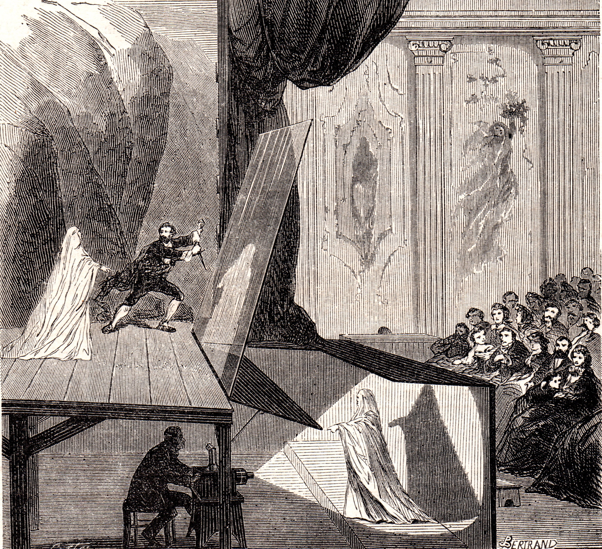

IES Valle del Alberche

📋 ¿En qué consiste la práctica?
Vamos a construir una pirámide holográfica: un dispositivo formado por cuatro caras de plástico transparente (acetato, metacrilato o incluso la tapa de una caja de CD) cortadas en forma de trapecio y unidas formando una pirámide truncada. Al colocarla sobre la pantalla de un móvil o una tablet, con un vídeo especialmente diseñado, en su interior aparece una imagen tridimensional flotante que se ve desde cualquier ángulo.
Parece un holograma de película, pero no lo es. Es una ilusión óptica basada en la reflexión de la luz y en un truco de percepción visual que ya se usaba en el siglo XIX. En esta práctica vas a descubrir cómo funciona, por qué engaña a tu cerebro y qué relación tiene con la magia y el ilusionismo.
¿Por qué vemos una imagen flotante en 3D si en realidad solo hay cuatro imágenes planas en una pantalla?

🎯 ¿Qué vas a aprender?
- Qué es la reflexión de la luz y cómo se aplica en las caras de la pirámide.
- Por qué el cerebro interpreta cuatro imágenes planas como un objeto 3D flotante.
- La diferencia entre un holograma real y una ilusión óptica tipo "holograma".
- Los precursores históricos de esta técnica: el "Fantasma de Pepper", los espectáculos de magia del siglo XIX y la linterna mágica.
- Las aplicaciones reales de este efecto: publicidad, museos, educación, conciertos, medicina, etc.
- Cómo construir la pirámide con materiales caseros y diseñar tu propio contenido.
🔬 Fundamento teórico
La luz, al llegar a una superficie, puede reflejarse, refractarse o absorberse. En el caso de las caras transparentes de la pirámide, ocurren dos cosas a la vez: parte de la luz se refleja y parte se transmite (refracción). Por eso se dice que son superficies semitransparentes o "semiespejadas".
La ley de la reflexión nos dice que el ángulo con el que llega un rayo a la superficie (ángulo de incidencia) es igual al ángulo con el que sale (ángulo de reflexión), medidos respecto a la normal (la perpendicular a la superficie):
Las caras de la pirámide están inclinadas 45° respecto a la pantalla. Gracias a esa inclinación, un rayo que sale de la pantalla horizontalmente se refleja en la cara y sale hacia el ojo del observador.
El vídeo que se reproduce en el móvil no es una imagen normal: está diseñado específicamente para esta ilusión. Contiene cuatro imágenes idénticas del objeto, dispuestas en una cruz o en un cuadrado, cada una orientada hacia un lado de la pantalla.
Cada cara de la pirámide refleja la imagen que le corresponde. Como las cuatro caras están inclinadas simétricamente, las cuatro imágenes reflejadas convergen en el mismo punto del espacio, en el centro de la pirámide. Tu cerebro recibe simultáneamente esas cuatro vistas parciales y las fusiona en una sola imagen tridimensional.
Para que las cuatro imágenes converjan correctamente, las caras deben cumplir ciertas condiciones:
- Deben ser trapecios isósceles idénticos.
- La inclinación respecto a la horizontal debe ser de 45°.
- La pirámide debe estar truncada (sin vértice en la parte superior).
- Las dimensiones deben ser proporcionales al tamaño de la pantalla.
Unas medidas típicas para un móvil son: base mayor de 6 cm, base menor de 1 cm y altura de 4 cm. Pero se pueden escalar según el dispositivo.
No. Un holograma auténtico se crea mediante interferencia de haces de luz coherente (normalmente de un láser) sobre una placa fotosensible. Un holograma real almacena la información de fase y amplitud de la luz, y al iluminarlo de nuevo reproduce una imagen tridimensional completa, con paralaje vertical y horizontal.
La pirámide holográfica, en cambio, no usa interferencia ni láser. Solo usa reflexión de cuatro imágenes planas. Es un "falso holograma" o "pseudo-holograma". Su nombre correcto en óptica sería "visualizador de reflexión 360°" o "efecto Fantasma de Pepper moderno".
Holograma real → interferencia de luz coherente.
Pirámide holográfica → reflexión de cuatro imágenes en caras inclinadas.
¿Por qué vemos un objeto 3D donde solo hay luz reflejada? Porque nuestro sistema visual está diseñado para interpretar la profundidad a partir de varias pistas:
- Paralaje: si mueves la cabeza, la imagen flotante se mueve ligeramente, como un objeto real.
- Perspectiva: las cuatro vistas corresponden a ángulos ligeramente distintos del objeto.
- Movimiento: si el vídeo es animado, el objeto "gira" o "se mueve" en 3D.
- Fusión binocular: cada ojo ve una versión ligeramente distinta de la imagen reflejada, lo que refuerza la sensación de volumen.
El cerebro combina todas estas señales y "decide" que hay un objeto sólido flotando. Es una ilusión óptica, no una proyección real.
La técnica de usar cristales inclinados para reflejar una imagen y hacerla aparecer "flotando" es muy antigua. Su precursor más famoso es el "Fantasma de Pepper" (Pepper's Ghost), una ilusión teatral del siglo XIX.

En 1862, el científico e ilusionista John Henry Pepper popularizó un efecto en el Royal Polytechnic Institution de Londres. Usaba una lámina de vidrio inclinada 45° frente al escenario. Un actor, escondido en un foso debajo del escenario e iluminado con una luz muy potente, se reflejaba en el cristal y aparecía sobre las tablas como un fantasma translúcido[reference:0]. El público enloquecía. El efecto fue tan popular que se exportó a América, Canadá y Australia, y visitó la realeza europea.
En realidad, la idea había sido desarrollada por Henry Dircks, que la patentó, pero Pepper la hizo famosa y se quedó con el nombre. Hay indicios de que una técnica similar ya se conocía desde el siglo XVI, cuando el erudito Giovanni Battista della Porta describió cómo usar espejos y cristales para crear apariciones[reference:1].
El Fantasma de Pepper nació en el mundo del espectáculo y la magia. Los ilusionistas del siglo XIX lo usaban para hacer aparecer y desaparecer personas, para crear "apariciones espiritistas" y para asombrar al público. Era un efecto "mágico" que en realidad era óptica pura.
En el siglo XX y XXI, la técnica se ha refinado y digitalizado. Hoy se usa en:
- Parques temáticos: fantasmas, duendes y efectos especiales en atracciones.
- Conciertos: artistas fallecidos "resucitan" en el escenario como hologramas (por ejemplo, el famoso caso de Tupac en Coachella 2012).
- Teatro y ópera: para crear escenas fantásticas.
- Museos: para mostrar objetos o personajes históricos.
- Publicidad y escaparates: para llamar la atención.
La pirámide holográfica y tecnologías similares (como las pantallas "Cheoptics 360" o los visualizadores de reflexión) se usan en múltiples campos:
📢 Publicidad y escaparatismo
Empresas y centros comerciales usan pirámides holográficas grandes para mostrar productos en 3D. Capta mucho más la atención que una pantalla plana.
🏥 Formación y medicina
Se han desarrollado dispositivos de visualización 3D para formación en enfermería, prevención de riesgos laborales y estudios ergonómicos. Permiten ver procedimientos y posturas desde cualquier ángulo[reference:2].
🏛️ Museos y patrimonio
Sistemas interactivos que muestran piezas arqueológicas o modelos históricos en 3D, permitiendo al visitante verlos desde múltiples perspectivas[reference:3].
🎓 Educación
Es una herramienta didáctica excelente para enseñar geometría, óptica, percepción visual y hasta programación (creando los vídeos). También se ha usado para mejorar la inteligencia espacial en estudiantes de ingeniería[reference:4].
🕺 Entretenimiento y eventos
Conciertos, ferias, presentaciones de productos, bodas... El efecto "wow" está garantizado.
⚙️ Materiales y procedimiento experimental
- Lámina de acetato transparente, metacrilato fino o la tapa de una caja de CD/DVD.
- Plantilla de papel con la forma de los cuatro trapecios.
- Rotulador permanente y regla.
- Tijeras o cúter (con cuidado).
- Cinta adhesiva transparente o pegamento.
- Un móvil o tablet con un vídeo de holograma (los hay en YouTube buscando "holograma 3D para móvil").
- Una habitación oscura.
- Dibuja en el papel un trapecio con las siguientes medidas (para un móvil típico):
- Base mayor (abajo): 6 cm.
- Base menor (arriba): 1 cm.
- Altura: 4 cm.
- Recorta el trapecio de papel. Es tu plantilla.
- Coloca la plantilla sobre el plástico transparente y dibuja con el rotulador cuatro trapecios idénticos.
- Recorta los cuatro trapecios con tijeras o cúter.
- Une los cuatro trapecios por sus bordes laterales con cinta adhesiva, formando una pirámide truncada (sin la punta).
- Asegúrate de que las bases mayores queden abajo y las menores arriba. La pirámide debe quedar "abierta" por arriba y por abajo.
- Busca en YouTube un vídeo de "holograma 3D para móvil". Estos vídeos muestran cuatro imágenes idénticas del objeto, dispuestas en cruz, con el centro en negro (para que no haya luz parásita).
- Reproduce el vídeo en el móvil o la tablet. Sube el brillo al máximo.
- Coloca la pirámide sobre la pantalla, con la base menor hacia arriba, centrada sobre el grupo de cuatro imágenes.
- Apaga las luces de la habitación. Espera unos segundos a que tus ojos se adapten.
- Observa el interior de la pirámide: aparecerá la imagen flotante. Muévete alrededor para verla desde distintos ángulos.
- Si la imagen no se ve bien, ajusta la posición de la pirámide o prueba con otro vídeo.
[ Pirámide truncada ]
↑
[ Imagen flotante ] ← convergencia de las 4 reflexiones
↓
[ Móvil con 4 imágenes en cruz ]
- Cambiar el tamaño de la pirámide: ¿qué pasa si la haces más grande o más pequeña? ¿Mejora o empeora la imagen?
- Probar con distintos vídeos: algunos objetos se ven mejor que otros. Prueba con figuras geométricas, personajes, planetas...
- Usar una tablet: la imagen será más grande, pero necesitarás una pirámide proporcionalmente mayor.
- Probar con luz ambiental: ¿se ve mejor a oscuras o con luz tenue?
- Construir la pirámide con otros materiales: vidrio, metacrilato grueso, etc. ¿Cambia la calidad?
- Diseñar tu propio vídeo: con un editor de vídeo, puedes crear tu propia animación de cuatro vistas.
¿Por qué las caras deben estar a 45°? La razón es geométrica. La luz que sale de la pantalla viaja horizontalmente (o casi). Para que se refleje hacia el ojo del observador, que está mirando desde arriba, el ángulo de incidencia y el de reflexión deben ser de 45° respecto a la normal de la cara. Si la cara estuviera menos inclinada, la luz saldría hacia otro lado; si estuviera más inclinada, el ojo no la captaría.
Por eso la pirámide funciona: su geometría está optimizada para dirigir la luz reflejada justo hacia donde está el observador.
📊 ¿Qué has demostrado?
La pirámide holográfica es una ilusión óptica basada en la reflexión de la luz, no un holograma real.
Cuatro imágenes planas en la pantalla se reflejan en cuatro caras inclinadas 45° y convergen en el centro de la pirámide. Tu cerebro fusiona esas cuatro vistas y las interpreta como un objeto 3D flotante.
Además, has comprobado que:
- La ley de la reflexión (\( \theta_i = \theta_r \)) explica por qué la luz llega a tus ojos desde el centro de la pirámide.
- La geometría (trapecios a 45°) es crítica para que la ilusión funcione.
- El efecto es un descendiente directo del Fantasma de Pepper (1862), una técnica de ilusionismo del siglo XIX.
- La técnica se usa hoy en publicidad, museos, medicina, educación y entretenimiento.
- Un holograma real y una pirámide holográfica no son lo mismo: el primero usa interferencia de luz coherente; la segunda, reflexión de imágenes planas.
🧪 DESMITIFICANDO la pirámide holográfica Pulsame
Enunciado: Un rayo de luz sale de la pantalla del móvil y llega a una de las caras de la pirámide formando un ángulo de 45° con la normal a esa cara. ¿Con qué ángulo se refleja? ¿Hacia dónde va el rayo reflejado?
Enunciado: El vídeo de la pirámide holográfica muestra cuatro imágenes idénticas del objeto, dispuestas en cruz. ¿Por qué no funciona con una sola imagen? ¿Qué pasaría si el vídeo tuviera solo una imagen central?
Enunciado: La pirámide holográfica no tiene vértice: está truncada (cortada por arriba). ¿Qué pasaría si tuviera un vértice puntiagudo? ¿Por qué el diseño truncado es mejor?
Enunciado: Explica en qué se parecen el Fantasma de Pepper (1862) y la pirámide holográfica actual. ¿Qué principio óptico comparten? ¿En qué se diferencian?
- Pepper usaba una sola lámina de vidrio y un actor real; la pirámide usa cuatro caras y una pantalla digital.
- Pepper creaba una imagen bidimensional (aunque con sensación de profundidad); la pirámide crea una imagen que se ve desde 360°.
- Pepper era analógico; la pirámide es digital.
Enunciado: Un compañero dice: "La pirámide holográfica es un holograma porque se ve en 3D". ¿Es correcta esa afirmación? Explica la diferencia entre un holograma real y una ilusión tipo pirámide.
Enunciado: Se ha desarrollado un dispositivo de pirámide holográfica para formar a personal de enfermería en la manipulación de pacientes. ¿Qué ventajas tiene esta tecnología frente a un vídeo normal o un maniquí?
Enunciado: Los magos del siglo XIX usaban el Fantasma de Pepper para hacer aparecer "espíritus" en el escenario. Hoy, la pirámide holográfica se usa en conciertos para "resucitar" a artistas fallecidos. ¿Qué relación existe entre magia, ilusionismo y ciencia en estos casos? ¿Es ético usar estas técnicas para engañar al público?
Cuatro trapecios, un móvil y un vídeo bien diseñado: la magia de la óptica al alcance de tu mano.
(Los detalles sobre lo que entra en las pruebas escritas se publicarán periódicamente en M.Teams).